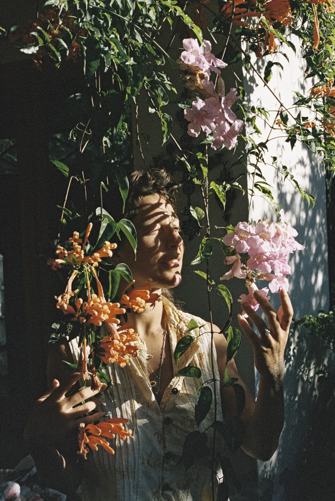
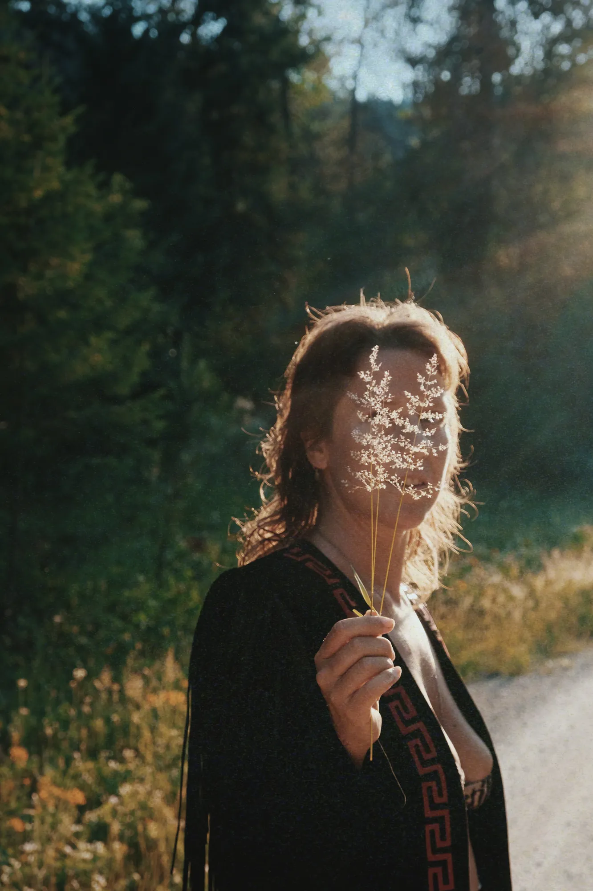

About my practice
On authorship, the creative process, and becoming

My work is concerned with authorship: how we construct meaning, how we come to understand ourselves, and how we participate in shaping the lives and work that are our own.
I am interested in the stories we live by. The conclusions we have drawn from our experiences. The roles we repeatedly inhabit. The beliefs that have become so familiar we rarely think to question them.
Much of what we understand to be our identity is made of interpretations — of ourselves, of other people, of what has happened to us, and of what we believe is possible.
Over time, these interpretations acquire authority. They begin to determine what we expect, what we choose, what we create, and what we allow ourselves to become.
A central part of my work is making these structures visible.
Through conversation, psychological inquiry, symbolic exploration, and attention to the body, I help people recognize the patterns and assumptions that organize their experience. We investigate what is repeating, what has become difficult to reconcile, and what might be asking for a different understanding.
I am particularly drawn to thresholds: periods when our existing understanding of ourselves becomes inadequate, when the old ways of living or creating no longer feel possible, and something new has yet to find its form.
These moments often invite a reconsideration of identity, meaning, desire, and personal authority.
Art and the creative process
My work with artists brings this inquiry directly into the creative process.
I work with writers, visual artists, filmmakers, and other makers to develop their work while exploring what the process itself reveals.
I am interested in the relationship between the maker and what they make.
Why does a particular image keep returning? What is someone trying to articulate before they have the language for it? What draws them toward a certain subject? What becomes difficult when an idea begins to acquire form? What do their aesthetic instincts reveal about the way they perceive and organize the world?
The creative process offers an extraordinary opportunity for self-knowledge because it confronts us with our own choices, instincts, contradictions, limitations, and desires.
It makes visible how we relate to uncertainty, judgment, ambition, discipline, exposure, and the unfamiliar.

Still, I believe deeply in the integrity of the work itself.
A piece of writing, an image, a film, or a body of work deserves to exist on its own terms. It asks for attention, discernment, formal precision, and the willingness to remain with something long enough for it to become what it needs to be.
I help artists develop their ideas, recognize their own creative language, understand what is moving through their work, and bring projects into form.
Sometimes this means questioning an assumption. Sometimes it means following a recurring image. Sometimes it means finding the structure that allows an idea to become a finished piece.
And sometimes the work reveals something about the person making it that could not have been discovered through reflection alone.
We discover ourselves through what we make. We also become different through the making.
This reciprocal relationship between creation and self-understanding is at the heart of my practice.
The questions I return to
Across both my personal and creative work, I return to the same questions:
- What have we come to believe about ourselves?
- Which meanings and expectations have we inherited, and which have we consciously chosen?
- What is trying to find expression?
- And what becomes possible when we begin to recognize our own authority in the lives we lead and the things we create?
For me, authorship is both a psychological capacity and a creative practice.
It is the ongoing work of developing a more conscious relationship with our experience, our imagination, and the forms through which we give our lives meaning.

I’m Nina Moore, a writer, artist, and creative guide
For more than fifteen years, I have accompanied people through personal inquiry and change. My background spans therapeutic work, embodied practice, ritual, and medicine facilitation. Over time, my work has become increasingly concerned with the relationship between our inner lives and what we bring into existence: the relationship between meaning and expression, between knowing ourselves and making something of that knowledge.
Today, I work as an advisor and creative guide. I listen closely to language, to contradictions, to what someone keeps returning to and what they almost say. Together, we examine the assumptions shaping their experience, make room for what remains unresolved, and find where a different understanding might allow movement.
My own practice moves through poetry, essays, and visual art. I am drawn to what is unfinished, contradictory, half-buried, still becoming. I am interested in the moment before something has a name, when giving it form requires attention without deciding too quickly what it is.
This also shapes how I work with other artists. A creative project can ask us to reconsider our loyalties, our ambitions, our understanding of what we are allowed to say. We discover ourselves through what we make. We also become different through the making. I help people recognise what is trying to come through and give it shape without losing its wildness.
I am French and live in the forests of Valle de Bravo, Mexico, with my partner and our two children. Motherhood has brought these questions into the most intimate parts of my life: what I can give, what I need to claim, how to remain available to those I love while taking my own work seriously. I write and work from within these questions.
My training includes Internal Family Systems, Jungian studies, mythosomatic work with Josh Schrei, and psychedelic integration with the MIND Institute. I am also a trained medicine facilitator, yoga teacher, and an Access Consciousness and ThetaHealing practitioner. These studies sit alongside years of accompanying people individually and in groups, and my ongoing engagement with mythology, philosophy, and artistic practice.